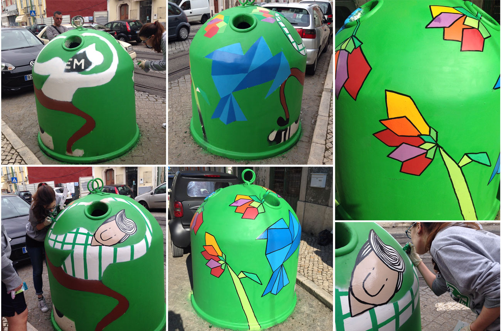
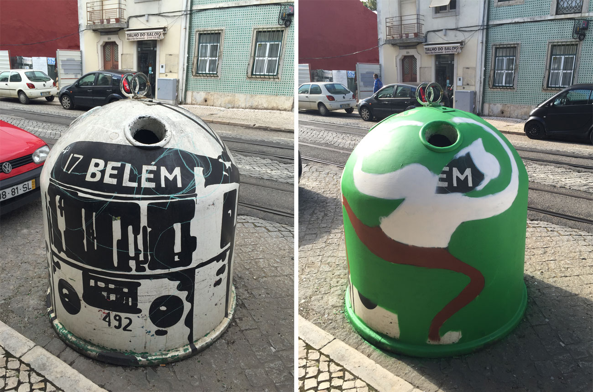
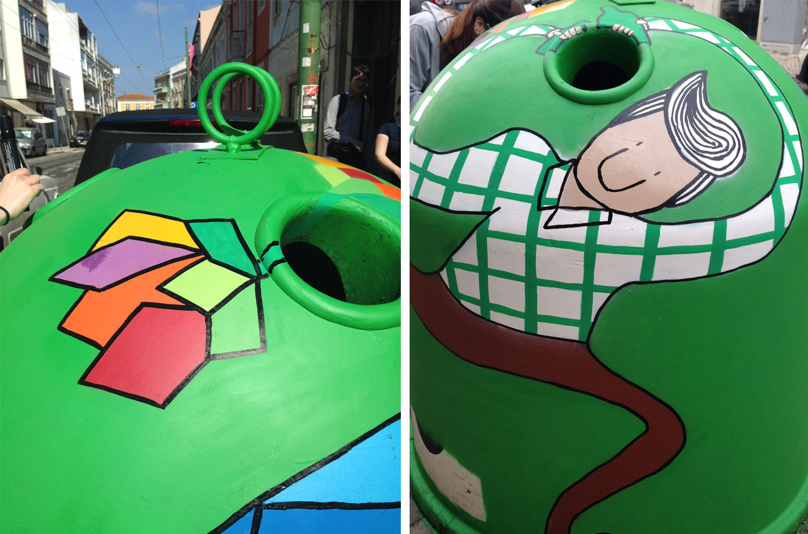
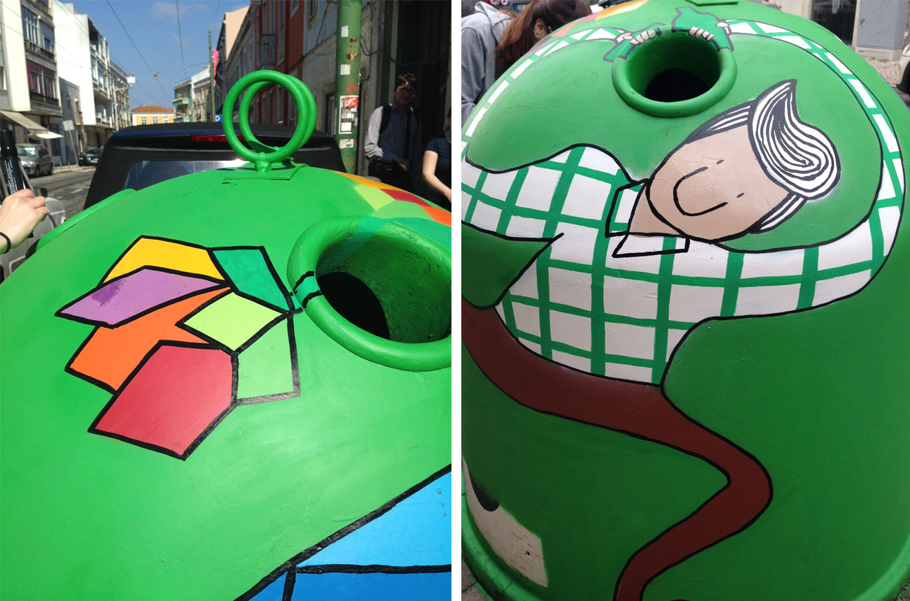
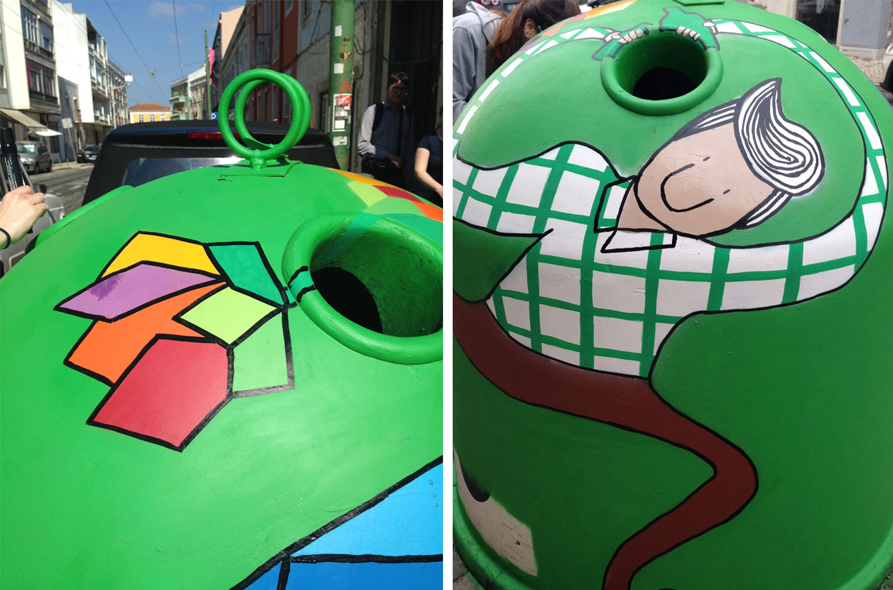

 

Tobias @ GAU
Project for GAU (Urban Art Gallery). GAU is a space for creative freedom dedicated by the city of Lisbon to graffiti and street art.
This was my intervention for the 9th edition of "Reciclar o olhar | Recycling the look". I've used spray cans and markers, which are some of the materials that I like to work with the most.
See here more photos of all interventions from the 9th editon. You can find out more about GAU on their facebook page. See here the work of Carolina Quintinho, she intervented on the same bottle bank as I did but on the 5th edition.
